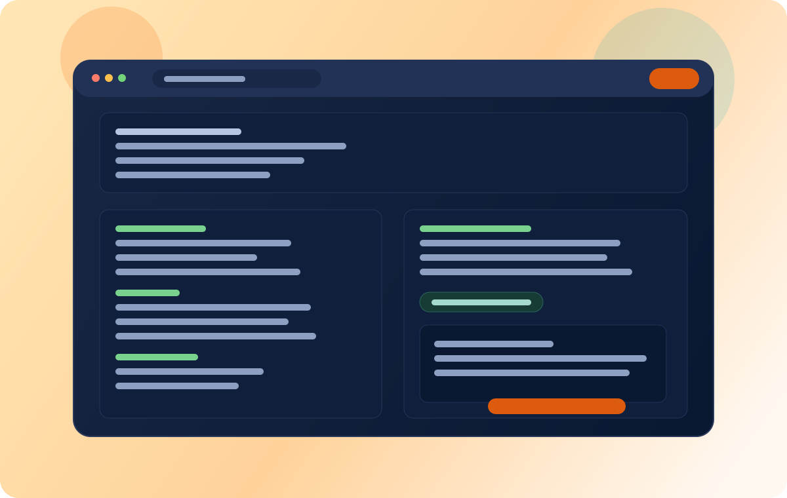

Safer execution
Run coding agents in isolated containers instead of directly on host environments.
Open-source CLI
Install VibePod from PyPI and run coding agents in isolated containers for safer, repeatable, automation-friendly workflows.

Run coding agents in isolated containers instead of directly on host environments.
Keep workflows consistent across machines, teammates, and CI pipelines.
Use one CLI entrypoint that fits existing developer toolchains.
How it works
Install from PyPI with python -m pip install vibepod, then verify with vibepod --help.
Select your repository and preferred coding-agent workflow from a unified CLI surface.
Execute agent tasks inside container boundaries and review output confidently.
Core features
Use one CLI to standardize agent workflows across local and shared setups.
Proof point: single entrypoint design for coding-agent tasks.
Separate agent execution from your host machine for safer iteration.
Proof point: container boundaries reduce environment bleed-through.
Keep behavior predictable by running agents in controlled container contexts.
Proof point: environment consistency across developers and CI jobs.
Script workflows directly from shell tooling and pipeline jobs.
Proof point: CLI ergonomics map naturally to automation systems.
Keep onboarding focused: install, verify, and start running tasks quickly.
Proof point: terminal-first interaction cuts UI overhead.
Adopt the default flow or customize around your team’s processes.
Proof point: GitHub-based development and contribution model.
Tool screenshots
These are the screenshots you added for Auggie, Claude Code, GitHub Copilot, Gemini, Mistral, OpenAI Codex, and OpenCode.


Quickstart
Install directly from PyPI, then use the GitHub README for deeper workflow examples and flags.
python -m pip install vibepod
vibepod --helpTip: pin versions in automation with python -m pip install vibepod==<version>.
FAQ
Install from PyPI using python -m pip install vibepod, then use the README for command examples.
Yes, containerized execution is the core model, so a compatible runtime is typically required for full functionality.
Yes. The CLI-first interface is designed to fit shell scripts and CI/CD jobs.
The project is positioned as one CLI for containerized AI coding agents. Confirm current provider support in the repo docs.
Use the GitHub repository issues and discussions to follow changes and request features.
Install from PyPI, verify locally, then adapt the GitHub examples to your team’s environment.